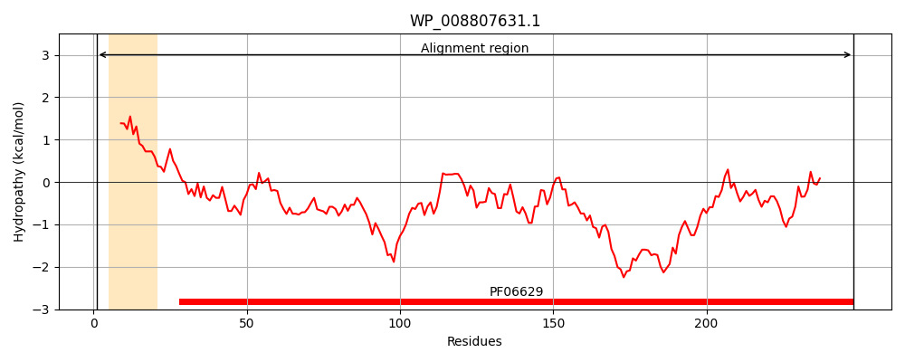
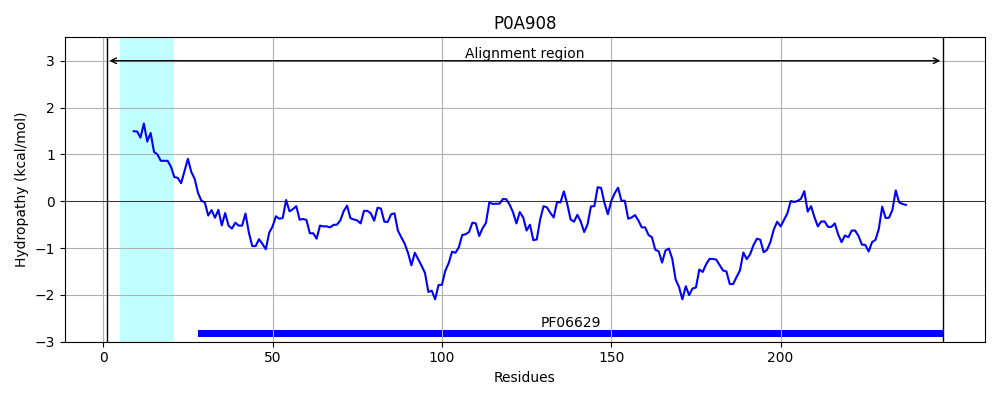
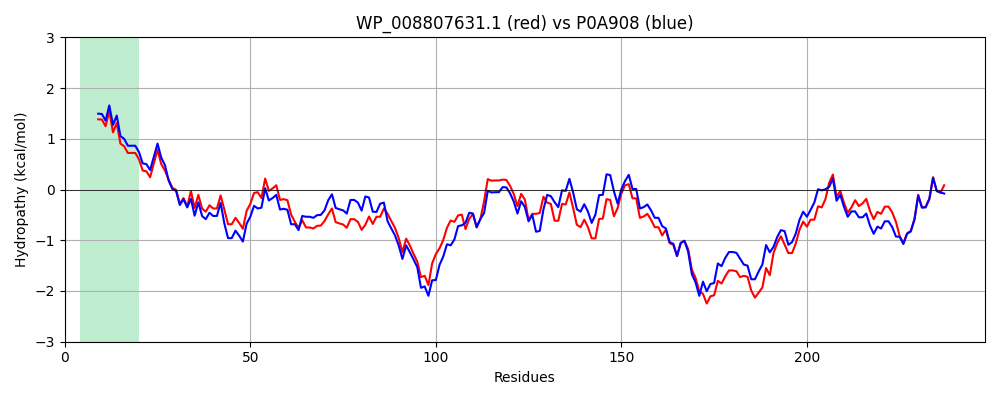

Hit Accession: P0A908
Hit TCID: 1.B.93.1.2
Hit Description: gnl|BL_ORD_ID|8621 gnl|TC-DB|P0A908|1.B.93.1.2 MltA-interacting protein OS=Escherichia coli (strain K12) GN=mipA PE=1 SV=1
Mach Len: 248
e:0.000000
Query TMS Count : 1
Hit TMS Count: 1
TMS-Overlap Score: 0.850000
Predicted Substrates:None
BLAST Alignment:
Score: 1122 , Bit scores: 436 bits, E-value: 1.5e-157, Alignment length: 248, Percentage identity: 81
Query: 1 MTKIKLLALGVLIATSASAAHADGKFTLGAGVGIVEHPYKQYDADVYPVPVISYESDNFWFHGLGGGYYLWNDTNDKLSITAYWSPMYFKPGDSDSAQMRQLDKRKSTVMAGLSYVHNTPYGFLRTTIAGDTLDNSNGINWDLAWLYRYTNGNLTLTPGIGVEWNSDNQNEYYYGVSQHESRRSGMRSYDPDSSWNPYLELSANYRFLGDWSVYGIARYTRLSDEITDSPMVDKSWSGLISTGITYTF 248
MTK+KLLALGVLIATSA AHA+GKF+LGAGVG+VEHPYK YD DVYPVPVI+YE DNFWF GLGGGYYLWND DKLSITAYWSP+YFK DS QMR LD RKST+MAGLSY H T YG+LRTT+AGDTLDNSNGI WD+AWLYRYTNG LT+TPGIGV+WNS+NQNEYYYGVS+ ES RSG+R Y+P+ SW+PYLELSA+Y FLGDWSVYG ARYTRLSDE+TDSPMVDKSW+GLISTGITY F
Sbjct: 1 MTKLKLLALGVLIATSAGVAHAEGKFSLGAGVGVVEHPYKDYDTDVYPVPVINYEGDNFWFRGLGGGYYLWNDATDKLSITAYWSPLYFKAKDSGDHQMRHLDDRKSTMMAGLSYAHFTQYGYLRTTLAGDTLDNSNGIVWDMAWLYRYTNGGLTVTPGIGVQWNSENQNEYYYGVSRKESARSGLRGYNPNDSWSPYLELSASYNFLGDWSVYGTARYTRLSDEVTDSPMVDKSWTGLISTGITYKF 248 | Protein Hydropathy Plots: |
|---|
|  |  |
Pairwise Alignment-Hydropathy Plot:
|
|---|
|  |